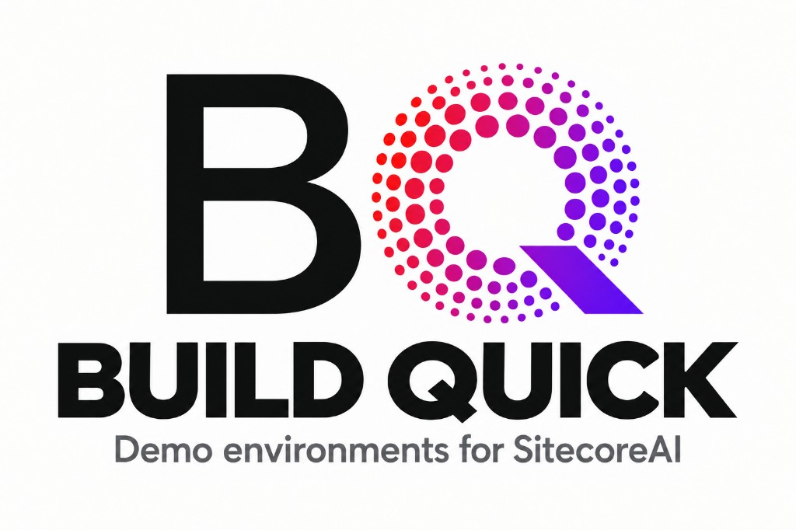

How to turn a live website into a SitecoreAI demo or proof-of-concept site: start with the easy path (capture screenshots, generate sections), then use the full command and environment reference when you need more control.
.env.local)BQ means Build Quick. It is the toolkit and Next.js app you use to build quick demo websites and build quick POC websites on SitecoreAI: take a real public site, capture it, generate Content SDK components and authoring definitions, serialize them into Sitecore, and show the result in the Pages editor.
In this repository BQ lives under the bq/ directory. It combines a Sitecore Content SDK Next.js rendering host with Node tooling that fills that host from a marketing URL. The Next.js app is what the SitecoreAI editing experience calls for React. The tools produce components, *.definition.ts files, and YAML under authoring/.
Three layers work together. The Next.js app (bq/src) renders layouts from SitecoreAI. The capture workspace (.bq/captures/{hostname}/) stores screenshots, HTML, and AI notes. The authoring output (authoring/items/bq-demo/sai/…) is Sitecore Content Serialization YAML produced by generate—not by hand-editing .yml.
*.definition.ts. Run authoring:generate (or let create call it) to create or update Sitecore YAML. Do not invent item IDs or patch generated YAML to fix a demo.
If you only remember one recipe, remember this. You capture the live pages you care about (Playwright takes screenshots and slices the page into section bands), then you ask create to turn those sections into Sitecore components and authoring definitions. Create also merges unique layouts across the host, wires presentation, creates page stubs for uncaptured routes, translates seed content into your cultures when configured, and runs generate so YAML lands under authoring/. After that you start the local rendering host and open Pages.
Do this once from bq/ after install and .env.local are in place (see §3). The -- after each script name is required so npm passes flags through to the CLI.
cd bq
# 1) Capture one or more pages (screenshots + section bands)
npm run capture:webpage -- --urls "https://www.example.com/,https://www.example.com/newsroom"
# 2) Generate Sitecore sections for every captured page on that host
npm run create:sectioncomponents -- --url "https://www.example.com/" --all
# 3) Run the local Pages rendering host
npm run devThat is enough for a normal first demo. Capture stores everything under .bq/captures/. Create reads those captures, writes React and *.definition.ts under bq/src/components/, and invokes authoring:generate unless you skip it. You do not need to run merge by hand first—create runs a host section-registry merge as step 0 unless you pass --skip-merge.
When you only want one page instead of the whole host, drop --all and pass that page’s URL. When one band looks wrong after a successful create, re-run AI for that band alone with --only section-04 --force:components (see §13). Optional fidelity loops that score the generated UI against capture crops are off by default; turn them on with --source-fidelity or --visual-fidelity (or the matching env flags) when you want a tighter visual match—see §10.
npm run dev is listening.
From bq/: run npm install, then npm run setup:playwright so Chromium is available for capture (and for visual fidelity screenshots later). Copy bq/.env.remote.example to bq/.env.local and fill it in—do not commit that file. At minimum you need Edge context IDs, default site name, editing secret, Azure OpenAI endpoint and key, and the Environment automation credentials used by generate. Optionally set a dedicated screenshot-conversion model and BQ_CULTURES (comma-separated Sitecore cultures such as nl-BE,fr-BE or de-DE,fr-FR). Section 5 walks through every variable in the example file.
Sitecore authoring credentials for generate. definitions:generate talks to the Sites API and runs ser pull/ser push. That needs an Environment automation client (not Design Library SITECORE_AUTH_*, not an Organization automation client, and not interactive dotnet sitecore cloud login alone). In Deploy: Credentials → Environment tab → Create credentials → Automation → copy into SITECORE_AUTOMATION_CLIENT_ID / SITECORE_AUTOMATION_CLIENT_SECRET. Also set BQ_SITECORE_ENVIRONMENT_ID (environment details card) and BQ_SITECORE_ENDPOINT (writable key under .sitecore/user.json → endpoints). Comments with the exact paths live in bq/.env.remote.example.
cd bq
npm install
npm run setup:playwright
# edit .env.localCapture one or more public pages on the same host. Playwright stores screenshots and section bands. Merge builds a section registry of unique layouts. After that, merge also tries to group related content (for example a news article body with a newsroom list or teaser strip) into content families so create can share one Sitecore item template—see §7. Create generates React + definition files (normally automatically), wires presentation (shared layout chrome + page layouts), creates page stubs, translates seed content into your cultures, and runs generate. You start npm run dev and connect Pages to that host.
You can run the steps separately when you want to inspect the registry, refresh only the design guide, or rebuild stubs without regenerating components. Those scripts are documented in §11. For day-to-day work, the easy path in §2 is enough.
.env.local)BQ reads configuration from bq/.env.local. Start from bq/.env.remote.example, which is commented so you can see where each value comes from. Variables fall into a few groups: the Next.js / Content SDK rendering host, Sitecore credentials for authoring generate, Azure OpenAI for capture and create, optional fidelity and translation controls, and optional Azure rate estimates for the cost lines printed in the terminal.
SITECORE_EDITING_SECRET protects the editor endpoint your Next.js app exposes (by default /api/editing/render). SITECORE_REVALIDATE_SECRET is optional: when set, callers of POST /api/revalidate must send the same value in the x-revalidate-secret header; leave it empty to skip that check. NEXT_PUBLIC_DEFAULT_SITE_NAME is the Sitecore site the app treats as default. NEXT_PUBLIC_DEFAULT_LANGUAGE is the default app language.
SITECORE_EDGE_CONTEXT_ID is the unified Edge context for server-side use and takes precedence over older Preview / Delivery Edge variables. NEXT_PUBLIC_SITECORE_EDGE_CONTEXT_ID is the client-side context (and a fallback if the server variable is missing). Optionally override the Edge platform hostname with NEXT_PUBLIC_SITECORE_EDGE_PLATFORM_HOSTNAME, and optionally set SITECORE_EXPERIENCE_EDGE_HOSTNAME when media URL rewriting should target a custom Experience Edge host (for example staging).
Personalization is optional. NEXT_PUBLIC_PERSONALIZE_SCOPE isolates personalization data when several environments share a Personalize tenant; it should match PAGES_PERSONALIZE_SCOPE on the connected environment. PERSONALIZE_MIDDLEWARE_CDP_TIMEOUT and PERSONALIZE_MIDDLEWARE_EDGE_TIMEOUT are millisecond timeouts for CDP and Edge requests in the personalize middleware (default 400). For Content SDK debug logging, set DEBUG to patterns such as content-sdk:* as described in the example file.
SITECORE_AUTH_CLIENT_ID, SITECORE_AUTH_CLIENT_SECRET, and SITECORE_RENDERINGHOST_NAME are for Design Library / Content SDK auth only. Do not reuse them for Sites API or definitions:generate—the wrong credential type produces OAuth 401 errors.
SITECORE_AUTOMATION_CLIENT_ID and SITECORE_AUTOMATION_CLIENT_SECRET must come from Deploy → Credentials → Environment tab → Automation for your project and environment. Those are required for BQ Sites API calls (create/update collections and sites) and for the non-interactive CLI login that ser pull/ser push use during generate. Organization automation clients get the wrong scopes and fail.
BQ_SITECORE_ENVIRONMENT_ID is the SitecoreAI environment id shown on the environment details card in Deploy. BQ_SITECORE_ENDPOINT is the named writable endpoint under repo-root .sitecore/user.json → endpoints (the name you pass to ser with -n). There is no default; unset fails fast. You can override the endpoint per run with --endpoint.
To scope generate to one demo without regenerating every collection in the tree, set BQ_GENERATE_URL (hostname maps to site and collection, for example www.sitecore.com → sitecore-com / sitecore), or set BQ_GENERATE_SITE and/or BQ_GENERATE_COLLECTION explicitly. Create passes site and collection automatically for the capture host. The same scoping is available on the CLI as --url, --site, and --collection.
Capture AI and create:sectioncomponents need AZURE_OPENAI_ENDPOINT, AZURE_OPENAI_API_KEY, and usually AZURE_OPENAI_DEFAULT_MODEL. For screenshot-to-TSX, set AZURE_OPENAI_SCREENSHOT_CONVERSION_MODEL to your multimodal deployment; when unset, create falls back to the default model. AZURE_OPENAI_SOURCE_FIDELITY_MODEL is an optional stronger model for source and visual fidelity scoring; it falls back to the screenshot conversion model, then to the default. AZURE_OPENAI_BENCHMARK_MODELS is a comma-separated list of deployments for npm run benchmark:layout-models (the conversion model is used as the baseline).
Both modes are off by default. Enable them with boolean-style values (true/false, 1/0, or yes/no, case-insensitive) or with the matching CLI flags described in §10.
BQ_SOURCE_FIDELITY turns on source fidelity: after write, the tool scores generated TSX text against capture crops (no browser render) and patches the TSX in place until the score meets the minimum or iterations are exhausted. BQ_SOURCE_FIDELITY_MIN_SCORE is the accept threshold from 1–100 (default 90); a CLI --source-fidelity=N wins over the env minimum. BQ_SOURCE_FIDELITY_MAX_ITERS is how many score→patch→re-score rounds to allow (0–3, default 3). Setting max iters to 0 force-skips source fidelity even if the enable flag or CLI switch is on.
BQ_VISUAL_FIDELITY turns on visual fidelity. For codegen v3, scoring/repair runs on the plain visual TSX before sitecoreize (shots under sections/…/visual-fidelity/); for non-v3, the written Sitecore package is rendered with placeholders filled, Playwright screenshots it, and on failure surgical change directives repair the package. BQ_VISUAL_FIDELITY_MIN_SCORE defaults to 95; BQ_VISUAL_FIDELITY_MAX_ITERS is 0–3 (default 3), and 0 force-skips visual fidelity. When both source and visual are enabled for a component, visual wins. Visual fidelity needs Chromium installed (npm run setup:playwright or npx playwright install chromium); a missing browser shows as score 0 with a launch error rather than a real layout score.
BQ_SKIP_AI_SOURCE_FIXUPS=1 skips the warn-only TSX/client post-pass after codegen; definition fixups still always run. The same skip is available as --skip-fixups on create.
Culture and EN-seed translation use the same Azure OpenAI settings. Results are cached on disk at .bq/definitions/cache/translations.json. Bypass the cache with BQ_FORCE_TRANSLATIONS=1 or with --force:translations on create / authoring generate. Set target Sitecore cultures with BQ_CULTURES (for example de-DE,fr-FR); capture and create also accept --cultures, which takes priority over page meta and then over this env value—see §9.
Terminal AI cost lines are estimates. Retail prices are cached under the repo .bq/ folder (override path with AZURE_MODEL_RATES_CACHE_PATH; TTL days with AZURE_MODEL_RATES_TTL_DAYS). For negotiated org rates you may set AZURE_BILLING_ACCOUNT_NAME, AZURE_BILLING_PROFILE_NAME, and AZURE_ACCESS_TOKEN together (or use az login); optionally set AZURE_PRICE_SHEET_API_VERSION. If negotiated rates fail, the tool soft-falls back to Retail.
Sitecore authoring items are large, nested YAML trees: template folders, field sections, Json Renderings, Available Renderings, Partial Designs, page __Renderings XML, datasource folders, language versions, and stable GUIDs. Asking an AI (or a person) to invent that YAML correctly every time is fragile. Small mistakes break serialization, layout, or the Content SDK component map.
A definition file (*.definition.ts) is a compact TypeScript object that describes the same intent in a shape that is easy for models and for code to produce: kind, keys, field names and types, seed content, placeholders, cultures, and presentation wiring. BQ’s generators then expand that object into full SCS YAML with consistent IDs, paths, and conventions.
That split has several benefits. For AI: create prompts ask for a definition object and a React component, not hundreds of lines of YAML. The model stays in one typed contract (satisfies ComponentTemplateDefinition and siblings in tools/definitions/types.ts). For programmed pipelines: merge, content-family field alignment, translation injection, stub emission, and presentation merge can mutate or rewrite definition TypeScript with ordinary code—merge field unions, set datasourceTemplate on thin family members, inject cultures, append Partial Design children—without parsing Sitecore YAML. For humans: you can read and edit a definition in an editor with TypeScript checking, then regenerate YAML. For demos: the same definition is the single source for templates, renderings, and seed items, so they stay in sync.
In short: definitions are the authoring API of BQ. YAML is a build artifact. Normally create writes definitions for you. When you need something special (extra data folder, custom stub, tweak a field, add a culture list by hand), you edit or add a definition and run generate—you do not start from empty YAML.
authoring:generate / definitions:generate discovers every file matching *.definition.ts under bq/src/components/ (via the shared discover helper). Typical layout:
| Path | Usual contents |
|---|---|
bq/src/components/{hostSlug}/ComponentName/*.definition.ts |
Component packages from create (e.g. sitecore-com/SitecoreAnnouncementBar/…) |
bq/src/components/{hostSlug}/_page-stubs/*.definition.ts |
kind: "page-stub" routes |
bq/src/components/sites/*-presentation.definition.ts |
kind: "site-presentation" (shared layout + page layouts) |
bq/src/components/sites/*-site.definition.ts |
kind: "site" |
bq/src/components/collections/*.definition.ts |
kind: "collection" |
bq/src/components/data/*.definition.ts |
Standalone kind: "data" models when shared |
Pair each UI component with a React module the Content SDK can map (same folder or adjacent). After adding a new TSX file, run npm run sitecore-tools:generate-map or npm run dev so the component map includes it. Definitions alone do not register React modules.
All kinds are declared in bq/tools/definitions/types.ts as the union type Definition. The ones you meet most often:
kind | Role |
|---|---|
component |
Usual create output: rendering façade + datasource model (folder/item templates + fields), optional parameters, variants, placeholders, content seeds, cultures, optional datasourceTemplate / GraphQL query. |
rendering |
Same emit path as component, more explicit rendering shape; prefer component for new work. |
data |
Standalone data templates/folders (shared models not tied to one rendering). |
parameters |
Reusable rendering-parameters template referenced by { definitionKey }. |
variants |
Headless Variants set under the site Presentation tree. |
enumeration / dictionary / media / field-validator |
Supporting authoring constructs (lists, dictionary phrases, media assets, validators). |
collection / site |
Headless collection and site scaffold. |
site-presentation |
Available Renderings, Partial Designs (shared layout chrome), and per-page layout wiring. |
page-stub |
Empty-ish page under Home for IA / link targets. |
On a component, important pieces include: definitionKey (kebab id used in maps and presentation), componentName (PascalCase React / item name), collectionSystem / siteSystem, model.itemTemplate.sections[].fields[] with Sitecore field type names (Single-Line Text, Rich Text, Image, General Link, Checkbox, Droplink, …), optional shared: true on fields, content.items seed bags, and placeholders with allowedControls listing other definitionKeys.
npm run create:sectioncomponents writes component definitions, stubs, and updates the site presentation definition for you. Manual definitions are for: scaffolding a component the capture path did not produce; adjusting fields or seeds after a review; adding a shared data or enumeration package; fixing presentation wiring that merge did not express; or building a tiny POC without a full capture.
To add a manual component package: create a folder under bq/src/components/{hostSlug}/YourName/; add your-name.definition.ts exporting an object with satisfies ComponentTemplateDefinition (or the matching kind type); add the React TSX that implements the rendering (named exports matching variants); if it must appear on a layout, update the site presentation definition (or re-run create for that page); run generate (below), then refresh the component map (npm run sitecore-tools:generate-map or dev); push or deploy authoring YAML into SitecoreAI as usual.
# After editing or adding *.definition.ts under bq/src/components/
cd bq
npm run authoring:generate -- --site sitecore-com --collection sitecore
# or only templates/renderings:
npm run definitions:generate -- --site sitecore-com --collection sitecore
# or only content seeds:
npm run content:generate -- --site sitecore-com --collection sitecoreScope with --site and/or --collection (or env BQ_GENERATE_SITE / BQ_GENERATE_COLLECTION) so you do not regenerate every demo collection in the tree. Prefer authoring:generate so definitions and content stay aligned; it forwards the same argv to both generators.
The site-presentation definition places header, footer, consent, and similar chrome on Partial Designs (shared layout placeholders such as headless-header, headless-footer, headless-cookie). Page body sections go on that page’s layout. Because shared datasources have language versions for each culture, switching language in SitecoreAI shows translated chrome immediately on every page that uses the shared layout—not only on the page you captured.
Marketing sites rarely invent a brand-new content model for every band. A newsroom overview, a “latest news” teaser strip, an article header, and the article body usually describe the same kind of item—title, image, date, link, body—shown through different layouts. If create emitted a separate Sitecore item template for each layout, authors would maintain duplicate fields and seed data would drift. BQ therefore looks for related content across the host’s section registry and groups matching components into a content family.
That search runs during capture:merge-sections (also step 0 of create:sectioncomponents), after layout deduplication. It is multi-signal on purpose: a single shared heading or image URL is never enough. Merge combines page co-occurrence (layouts that appear together on many pages), overlapping suggested fields (Title, Image, Date, Link, Body, and similar), route and purpose taxonomy (tokens such as news, article, blog, press; listing names like grid/teasers versus detail header/body), and overlapping instance content hashes when taxonomy also matches. Site chrome—header, footer, navigation, consent—is excluded so it never joins a news family by accident.
The classic example is broader than “news + news list.” A host might end up with one family that includes a newsroom grid, latest teasers, an article header, and a rich article body. The same idea applies to press rooms and blogs. Roles inside the family describe how each layout participates: list or teaser layouts present many cards; detail header and detail body present one item. The owner is the member with the richest content model (usually the article body, not the largest HTML grid). Create emits a full item template and shared content.items seeds on that owner. Other members become thin renderings that point at the owner via datasourceTemplate, so Pages still has distinct components while authors edit one underlying template.
When create runs, it reads contentFamilyId from the registry, unions fields across member instances (matching values and preferring sensible names and types), writes shared seeds only on the owner, and aligns React field components (Text vs Rich Text) to the final types. Re-running create with the same captures is idempotent. For families to form, capture enough related URLs on the same host—typically a listing or homepage and at least one detail article—so co-occurrence and field overlap have something to work with.
Technical signal thresholds, owner scoring, and emit steps are documented in bq/tools/capture/references/content-families.md. The on-disk ledger is {host}/section-registry/content-families.json.
You usually capture only a few URLs. Navigation and cards still link to many other paths. Page stubs (kind: "page-stub" under _page-stubs/) become Sitecore pages under Home so the IA matches the live site. Sources: site-content-tree.json (stub/mimicked routes) and same-site links found in definitions (create-if-absent). Tree stubs are capped (on the order of forty). A stub is a route + title, not a fully designed page—fill it later by capturing that URL or authoring in Pages.
Locale prefixes in URLs (/be/en/…, /nl/…, /de/…) are normalized to one item path where possible. Sitecore uses one page tree; languages are versions. Which languages you seed is configurable (next section)—not fixed to NL/FR.
Codes such as nl-BE and fr-BE appear in many examples because those demos use them. For any site, choose the Sitecore culture codes you need.
What cultures do. Capture stamps them on page-meta.json. Create writes content.cultures (and source content.culture) on definitions. Translation produces language versions of seed strings. The React component is unchanged.
Shared layout. Chrome on Partial Designs uses those multi-language datasources, so language switch shows translated header/nav/footer immediately site-wide.
Priority: (1) CLI --cultures, (2) capture page-meta.json, (3) BQ_CULTURES in bq/.env.local.
BQ_CULTURES=de-DE,fr-FR
npm run capture:webpage -- --url "https://www.example.de/" --cultures "de-DE,fr-FR"
npm run create:sectioncomponents -- --url "https://www.example.de/" --all --cultures "de-DE,fr-FR"
npm run create:sectioncomponents -- --url "https://www.example.com/" --all --cultures "de-DE,it-IT" --force:translationsSource language comes from the captured page; target cultures are the Sitecore versions to emit. Prefer re-running create over hand-editing dozens of definition files. Ensure languages exist in the SitecoreAI project.
After create writes a component package, you can optionally ask BQ to judge how well the result matches the capture crops and improve it. These loops are off by default because they add Azure cost and time. Enable them from the CLI or from .env.local (see §5.4).
Source fidelity (--source-fidelity[=N] or BQ_SOURCE_FIDELITY=true) compares the generated TSX text to the desktop/tablet/mobile crops and applies a dense in-place patch when the score is below the minimum (default 90). It does not launch a browser. Use it when you want a cheap second look at structure and class choices without paying for a full render loop.
Visual fidelity (--visual-fidelity[=N] or BQ_VISUAL_FIDELITY=true) is the stronger loop. With codegen v3, it runs on the plain visual TSX before sitecoreize: Playwright shots under sections/…/visual-fidelity/<Name>/, AI score vs crops (default minimum 95), then surgical Tailwind/layout repair (no Sitecore language) up to BQ_VISUAL_FIDELITY_MAX_ITERS rounds; post-write visual is skipped. For non-v3 (and fidelity:component), it still builds a Sitecore package preview (including AppPlaceholder children when the plan has them), scores, and surgically repairs the written package. When both source and visual are on, visual wins for that component. BQ_VISUAL_FIDELITY_MAX_ITERS=0 disables the mode entirely.
Cached packages that create would normally skip are also skipped for fidelity. To force a fresh AI package (and therefore a fresh fidelity pass when fidelity is enabled), use --force:components or --force:definition rather than a full --force:all if you only need TSX/definitions rewritten. Install Chromium before relying on visual fidelity; without the browser binary the score stays at 0 and the log asks you to run npx playwright install.
# Enable for one create run (optional min score)
npm run create:sectioncomponents -- --url "https://www.example.com/" --all --visual-fidelity=95
# Or leave BQ_VISUAL_FIDELITY=true in .env.local and re-score after regenerating packages
npm run create:sectioncomponents -- --url "https://www.example.com/" --force:componentsFidelity AI usage is rolled into the terminal cost totals alongside decompose and codegen. Prefer visual fidelity when the layout must look right across viewports; prefer source fidelity when you want a lighter check.
When you already have a component package on disk and only want to re-score or improve that one rendering—without merge, YAML emit, pull, or push—use npm run fidelity:component. Pass --component with the PascalCase folder name under bq/src/components/{host}/, the same --visual-fidelity[=N] / --source-fidelity[=N] flags (or the matching env vars), and optionally --url / --host so crops resolve from the right capture. Capture context normally comes from that component’s *.capture-meta.json. The command reuses the same fidelity loops as create and may rewrite TSX (and definition text on visual regen); it never runs authoring:generate. See §11.8 for the full option list.
npm run fidelity:component -- --component SitecoreCardGrid --url "https://www.example.com/" --visual-fidelity=95Every script below is defined in bq/package.json. Pass flags after --. Use --help on capture/create scripts for the live text. If you only need the happy path, stay with §2; this section is the full control surface.
npm run capture:webpageEntry point: Playwright visit → HTML, CSS, fonts, screenshots, section bands, AI section metadata, design guide.
| Option | Description |
|---|---|
--urls <a,b,c> | Comma-separated URLs (also accept bare https args). |
--file <path> | Text file, one URL per line (# comments ignored). |
--out <dir> | Output root (default <repo>/.bq/captures). |
--full-page | Full scrollable page (default true). |
--viewport-only | Above-the-fold only (weaker for full-page discovery). |
--no-html | Skip saving page HTML. |
--no-sections | Skip hybrid detection and section export. |
--wait-ms <n> | Extra wait after readiness (default 0). |
--timeout-ms <n> | Navigation timeout (default 60000). |
--devices <list> | desktop, tablet, mobile (default all). Desktop width follows SitecoreAI Desktop Small (1024). |
--manifest | Write manifest.json listing outputs. |
--load <mode> | commit | domcontentloaded (default) | networkidle. |
--styled-html | Also write legacy styled HTML variants (modern section.html is always self-contained). |
--cultures <list> | Sitecore cultures stamped into page-meta.json. Default: BQ_CULTURES. |
--force[=kinds] | Redo artifacts. Kinds: html, css, fonts, screenshots, sections, design, or all. Bare --force = all kinds. |
-h / --help | Help text. |
npm run capture:webpage -- --urls "https://www.example.com/,https://www.example.com/about"
npm run capture:webpage -- --file urls.txt --devices desktop,mobile --force=sections
npm run capture:webpage -- --helpnpm run capture:merge-sectionsHost-wide section registry: unique layouts, instances.json refs, registrySection backlinks, then content families (related news/list/detail and similar groups—see §7), then section plans / site-summary / website design markdown. Does not open a browser for full capture. Create already runs this as step 0; use the standalone script when you want to inspect or refresh the registry without codegen.
| Option | Description |
|---|---|
--url <https://…> or bare URL | Identifies the host folder under .bq/captures/; merges all page folders for that host. |
--ai | Azure judge for unsure layout pairs. |
--use-ai | Azure clusters all section HTMLs into parallel section-registry-ai/ (create does not require it). |
--force[=kinds] | Same capture force kinds as above where applicable. |
--help | Help text. |
npm run capture:merge-sections -- --url "https://www.example.com/"
npm run capture:merge-sections -- --url "https://www.example.com/" --ainpm run create:design-systemRefreshes ai-derived-design.md for an existing capture folder (Azure from HTML+CSS). Does not generate React components.
| Option | Description |
|---|---|
--url or bare URL | Resolves capture page folder. |
--force[=kinds] | Redo; use design (or all) when sourceHash would skip Azure. |
--wait-ms / --timeout-ms / --load | Same navigation knobs as capture when re-fetch is needed. |
--help | Help text. |
npm run capture:site-summaryDisk-only rebuild of site-summary.json from existing page manifests.
| Option | Description |
|---|---|
--project <path> | Host capture folder, e.g. ../.bq/captures/www-example-com. |
--help | Help text. |
npm run capture:site-content-treeBuilds the site IA tree used for stubs. Create also builds/reads this; run alone to inspect or regenerate.
| Option | Description |
|---|---|
--project <path> | Host capture folder. |
--site-content-path <path> | Optional Sitecore content path hint. |
--help | Help text. |
npm run capture:section-plansRegenerates section-plan.json files for registry components without Playwright.
| Option | Description |
|---|---|
--project <path> | Host capture folder. |
--section <folder> | Optional single section folder name. |
--help | Help text. |
npm run create:sectioncomponentsMain generation: merge (unless skipped) → screenshot-to-TSX/definitions (honoring contentFamilyId for thin family members and owner field unions—see §7) → optional source or visual fidelity (§10) → presentation + stubs → translations → authoring:generate (unless skipped). Never writes YAML itself.
| Option | Description |
|---|---|
--url <url> | Required. Captured page URL; with --all, host seed (processed first). |
--all | Every captured page on the host: merge once, codegen each unique registry component once, wire all pages, generate once. Incompatible with --only. |
--only <section-NN> | Convert a single section folder on that URL. |
--collection <name> | Override collection system name. |
--site <name> | Override site system name. |
--cultures <list> | Sitecore cultures for definition content. Default: page-meta, else BQ_CULTURES. |
--force / force kinds | Bare --force = components + definition + yaml (not translations). --force:components / --force:definition re-run the AI package. --force:yaml re-runs YAML emit only. --force:translations bypasses translation cache. --force:all includes translations. Combine with commas, e.g. --force:translations,yaml,definition. |
--dry-run | Plan only; no writes, no generate. |
--skip-generate | Write TSX/definitions but skip authoring:generate. |
--skip-fixups | Skip TSX/client warn-only post-pass (definition fixups still run). Also BQ_SKIP_AI_SOURCE_FIXUPS=1. |
--source-fidelity[=N] | Enable source fidelity (TSX text vs crops → dense patch). Optional min score N (default 90). Off by default. Skipped when BQ_SOURCE_FIDELITY_MAX_ITERS=0. |
--visual-fidelity[=N] | Enable visual fidelity (render → score → surgical repair). Optional min score N (default 95). Off by default. v3: pre-sitecoreize on visual TSX. When both are on, visual wins. Skipped when BQ_VISUAL_FIDELITY_MAX_ITERS=0. |
--skip-merge | Skip step 0 host section-registry merge. |
--merge-ai | Pass --ai into merge for unsure pairs. |
--help | Help text. |
Env for conversion: AZURE_OPENAI_SCREENSHOT_CONVERSION_MODEL (fallback default model). Optional stronger model for fidelity scoring: AZURE_OPENAI_SOURCE_FIDELITY_MODEL. Cost estimates print per call, per section, fidelity rollups, and page totals.
npm run create:sectioncomponents -- --url "https://www.example.com/" --all
npm run create:sectioncomponents -- --url "https://www.example.com/" --only section-04 --force:components
npm run create:sectioncomponents -- --url "https://www.example.com/" --force:yaml
npm run create:sectioncomponents -- --url "https://www.example.com/" --force:all
npm run create:sectioncomponents -- --url "https://www.example.com/" --all --visual-fidelity
npm run create:sectioncomponents -- --helpnpm run fidelity:componentStandalone fidelity for one existing component package. Same source/visual loops as create (§10), but no merge, no presentation wiring, no translations batch, and no authoring:generate / ser pull or push. Use this to iterate on a single TSX after create already wrote the package.
| Option | Description |
|---|---|
--component <Name> | Required. PascalCase component folder (e.g. SitecoreCardGrid). |
--url <https://…> | Captured page for crops. Default: url in the component’s *.capture-meta.json. |
--host <hostSlug> | Host folder under src/components. Default: from --url, or the unique matching host folder. |
--source-fidelity[=N] | Enable source fidelity (optional min score; default 90). Same env gates as create. |
--visual-fidelity[=N] | Enable visual fidelity (optional min score; default 95). When both are on, visual wins. |
--dry-run | Score without writing patched TSX/definition where supported. |
--help | Help text. |
At least one fidelity mode must be enabled via CLI flag or BQ_SOURCE_FIDELITY / BQ_VISUAL_FIDELITY. The component must already exist under bq/src/components/{host}/{ComponentName}/ with TSX, definition, and capture-meta that points at a captured section.
npm run fidelity:component -- --component SitecoreCardGrid --url "https://www.example.com/" --visual-fidelity=95
npm run fidelity:component -- --component SitecoreMediaCallout --host sitecore-com --source-fidelity=90
npm run fidelity:component -- --helpnpm run authoring:generateRuns definitions:generate then content:generate with the same CLI arguments. Converts all discovered *.definition.ts under bq/src/components/ into SCS YAML under authoring/.
| Option | Description |
|---|---|
--site <name> | Limit generate to that site system (also BQ_GENERATE_SITE). |
--collection <name> | Limit to that collection (also BQ_GENERATE_COLLECTION). |
--skipPull / --skip-pull | Skip start orphan-heal + serialization pull (create often passes this on its final generate). |
--skipSites / --skip-sites | Skip collection/site Phase 1 emit. |
npm run authoring:generate -- --site domsecurity-com --collection domsecurity
npm run definitions:generate -- --site sitecore-com --collection sitecore
npm run content:generate -- --site sitecore-com --collection sitecoredefinitions:generate = templates, renderings, presentation YAML. content:generate = datasource items, dictionaries, stub pages, seeded content. Prefer the combined script unless you are debugging one half.
| Script | What it does |
|---|---|
npm run ensure:host-components | Ensures Partial Design / dynamic placeholder host component exists. Called by map generation. |
npm run sitecore-tools:generate-map | Scans bq/src/components → Content SDK component map. |
npm run sitecore-tools:generate-map:watch | Same on file changes. |
npm run sitecore-tools:build | Sitecore CLI project build (metadata, sites, import map). |
npm run next:dev | Next.js with inspector. |
npm run next:build / next:start | Production Next only. |
npm run dev | Map → Sitecore tools build → Next + map watch. Local Pages rendering host. |
npm run build / start | Production build then start. |
npm run lint | ESLint on src TypeScript. |
npm run setup:playwright | Install Chromium for capture and visual fidelity. |
npm run benchmark:layout-modelsCompares Azure deployment names on a short multimodal fidelity probe (not full codegen). Use when choosing AZURE_OPENAI_SCREENSHOT_CONVERSION_MODEL.
| Option | Description |
|---|---|
--url <url> | Required captured page URL. |
--only <section-NN,…> | Sections to score (default: first five). |
--models <deploy,…> | Azure deploy names to compare. |
--help | Help text. |
Push or deploy authoring for SitecoreAI. Start npm run dev from bq/. Point the Pages editing host at that origin. New renderings appear when the map and CM items are present. To check languages, open any page on the shared layout and switch culture: header, nav, and footer should show translated versions immediately.
Capture reuses complete artifacts unless --force kinds say otherwise. Create skips Azure when conversion hashes match or a registry package was already built—“skip AI” on a second run is success. Target --only section-NN --force:components for one bad band without refreshing translations. Use bare --force when you also want YAML emit for those packages, and --force:all (or --force:translations) when language seeds must refresh. Recapture with --force=sections when the live site changed. Translation cache: --force:translations or delete the translations cache under .bq/. Terminal cost lines are estimates; fidelity calls are included in the rollups when those modes are on.
No capture folder → URL slug mismatch; check .bq/captures/ and source-url.txt. Bad section slices → detected-sections.png, then --force=sections. Duplicate news templates → run merge, then create again. Empty Pages → generate skipped, YAML not pushed, or dev not running. --all with --only rejected by design. Nav 404s → stubs + generate. Wrong languages → set BQ_CULTURES or --cultures, create with --force:translations, confirm languages in SitecoreAI. Manual definition not in YAML → file not under bq/src/components/**/*.definition.ts, or generate scoped to the wrong --site/--collection.
Visual fidelity score 0 / Playwright launch error. Chromium is missing or outdated for the Playwright version in bq/. From bq/ run npm run setup:playwright or npx playwright install chromium, then re-run create with --force:components (and fidelity enabled) so packages are scored again.
Sites API / generate OAuth 401. Interactive dotnet sitecore cloud login will not fix this. Confirm SITECORE_AUTOMATION_CLIENT_ID / SECRET are from Deploy → Credentials → Environment → Automation (not Organization, not Design Library SITECORE_AUTH_*). Set BQ_SITECORE_ENVIRONMENT_ID and BQ_SITECORE_ENDPOINT. Generate refreshes CLI login non-interactively from those automation credentials before ser pull/push.
CLI help: npm run capture:webpage -- --help, npm run create:sectioncomponents -- --help, npm run fidelity:component -- --help, npm run capture:merge-sections -- --help. Environment template with comments: bq/.env.remote.example. Type contracts: bq/tools/definitions/types.ts. On-disk capture contract: bq/tools/capture/references/output-contract.md. Capture flags: bq/tools/capture/references/capture-options.md. Content families: bq/tools/capture/references/content-families.md.